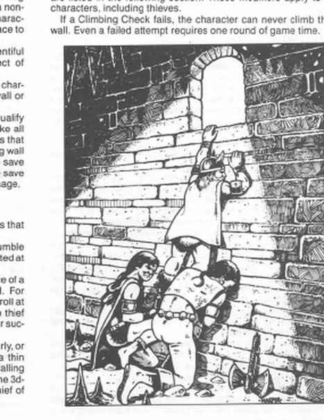

地下行动规则 · Movement Rules for Underground Play
本节的新移动规则处理地下冒险中常见的几类情形。它们并非地下冒险所独有，但在这里经常遇到，因此规则强调要在地下环境中处理这些情况。若没有其他规则或例外规定，地下城主也可以酌情把这些规则用于 AD&D 游戏战役中遇到的任何类似情形。
属性检定 · Ability Checks
在本书规则的许多地方，角色都可能需要针对七项属性中的一项进行属性检定：力量、智力、感知、敏捷、体质、魅力和容貌。检定会根据情形称为敏捷检定、体质检定等。
属性检定掷 1d20。若结果等于或低于相关属性，检定成功。例如，力量为 12 的角色需要进行力量检定，掷出 d20 结果为 14，因此检定失败，尝试完成的力量动作也失败。
有时属性检定会指定某个数量或组合的骰子，例如 4d6 敏捷检定。此时用指定骰子替代 d20，但目标仍是掷出等于或低于属性值的结果。某些情况下也可能适用属性调整值。
熟练项检定 · Proficiency Checks
遵循《东方冒险》的 AD&D 规则传统，《地城生存指南》介绍了非武器熟练项。这些熟练项包括制武、木工和采矿等能够增强玩家角色冒险能力的技能，也包括攀爬、黑暗中战斗和生火等能够直接帮助角色在冒险中生存的技能。
在冒险熟练项的情况下，玩家经常需要进行熟练项检定。检定时掷 1d20，并将结果与角色在该熟练项上的评级比较；结果低于评级即为成功。每项熟练项的确切性质会在后文说明；本节后续规则可能引用熟练项检定，具体细节应查阅熟练项章节。
游泳 · Swimming
波浪、地下湖和被淹没的地下城对需要空气的生物都是严重问题。游泳规则处理两项能力：角色能憋气多久，以及能否在水中移动。除非使用水下呼吸药水等魔法援助，以下规则均适用；魔法效果优先于天生游泳能力。
游泳规则假定角色没有借助水下呼吸药水或其他类似魔法手段。使用这类装置时，其效果始终优先于角色天生的游泳能力。
憋气
若角色下水前能深吸一口气，且不进行剧烈运动，能憋气的轮数等于 体质的 1/3，向上取整。正常移动、寻找暗门和开锁属于非剧烈活动，但角色不能处于完全负重。
战斗、拖拽不合作的生物、搬运重物、高速移动，以及完全负重下水，都算剧烈运动，憋气时间减半（向上取整）。若下水前没有机会深吸气，时间再次减半；两次减半可以叠加，但角色至少能坚持 1 轮。
憋气时间结束后不会立刻死亡。此后每轮进行一次体质检定以维持生命：第一次无修正，之后每轮累计 −2，直到离开水中或检定失败死亡。体质 16 的角色可憋气 6 轮，第 7 轮无修正，第 8 轮 −2，第 9 轮 −4，第 10 轮 −6，以此类推。
对于采用《东方冒险》规则中武士角色的玩家，这套憋气系统可以用来增强武士的气力能力。武士可以依照《东方冒险》的规则憋气，也可以使用本规则，并将按本规则确定的持续时间增加 1 轮。
若角色只是想避免吸入周围空气（例如可疑毒气），按游泳公式计算并额外增加 1 轮；只有在预先怀疑会释放毒气时才能如此行动。
水中移动
有游泳熟练项的角色可以在水中活动；没有熟练项的角色无法在深水中保持漂浮，除非得到帮助。角色不需要游泳熟练项也能按上述规则憋气。人形怪物有 1/3 几率会游泳；几乎所有动物被迫时都能游泳，狼和其他犬科动物会主动跟随猎物入水，而猫科动物通常只在绝望时下水，火焰或石头生物通常不会入水。
游泳分为耐力、速度和潜水深度：耐力表示不休息能游多久（前提是能在水中呼吸）；速度表示每轮在水中移动的距离，完全潜水时降为最大速度的 2/3；潜水表示已在水中时一轮能下潜多深。
负重对游泳的影响
| 负重 | 耐力 | 速度 | 潜水 | 上浮 |
|---|---|---|---|---|
| 无负重 | ×2 | ×2 | 正常 | ×2 |
| 正常装备 | 正常 | 正常 | 正常 | 正常 |
| 重装备 | ÷2 | ÷2 | ×2 | ÷2 |
| 极重装备 | ÷4 | ÷4 | ×3 | ÷4 |
| 超载 | 无 | 无 | ×3 | 无 |
超载角色不能靠自身力量在水中移动，入水就会下沉。
耐力等于角色总经验等级 + 体质，单位为回合；携带正常装备的 6/5 级战士／魔法师、体质 12 者可游 23 回合，无负重则 46 回合。若角色只是在原地踩水以保持漂浮，游泳耐力的回合数加倍。耐力耗尽时，角色会溺水，除非能离开深水或找到保持漂浮的方法。高速游泳使速度加倍，但耐力降至原值的 1/10；离开水面后，角色必须花费与高速游泳持续时间相同的时间休息。人类基础速度为每轮 4″，半人类和类人生物为 3″；力量伤害奖励可加到速度，最高 +3″。
潜水、上浮与水流
正常下潜速度为每轮 20 英尺。跳入或潜入水面附近可在第一轮额外下潜 10 英尺；从水面上方每高 10 英尺再加 5 英尺，最高按 40 英尺高度计算，且不受负重影响。正常上浮速度为每轮 20 英尺；单纯漂浮上升的角色慢 5 英尺。重装备或更重负重必须主动游向水面，否则不会上浮。水下脱背包需 1 轮，脱护甲所需轮数为 10 − 护甲等级。
例如，一队角色想查看巨大地下水池水面下的一点发光处。两名角色跳入水中并立即下潜，其中一人携带重装备，另一人携带正常装备。两人因跳入水中，第一轮下潜深度都增加 10 英尺。携带正常装备的角色可按正常速度每轮下潜 20 英尺，因此第一轮结束时深度为 30 英尺；原书示例随后按“重装备使潜水倍率变为三倍”计算，认为重装备角色在额外 10 英尺之外还能下沉 60 英尺，第一轮结束时深度为 70 英尺。此处与同页表格将重装备列为潜水 ×2 的印刷值不一致，均照录待校勘。
水流速度相对角色本身速度计算。40 英尺／轮的溪流中，人类以 4″／轮逆流可保持原位；速度 3″／轮的矮人和半身人仍会每轮被冲下 10 英尺。被瀑布带走时受到该高度正常伤害的一半，但可进行对抗吐息武器的豁免；成功时，100 英尺以内无伤，超过 100 英尺则只承受正常伤害的 1/10。急流危险等级为 1–10，数字越低越危险；按危险等级间隔进行游泳熟练项检定，失败时被水下岩石撞击并受 1d6 伤害。危险等级不超过 5 的溪流中，角色必须高速游泳。
极快的溪流可能凭借水流惯性把角色带走并造成严重伤害；在撞上东西以前，水流甚至可能成为快速而直接的交通方式，但水下岩石和地下瀑布很快会打破这种错觉。溪流危险等级应根据水速、水深（越浅越危险）、河床障碍数量以及可用于看清障碍的光照等因素决定。
攀爬 · Climbing
地下洞穴常有悬崖和落差。除盗贼外，所有职业也能在有手脚点的陡坡上有限度地移动；只有盗贼能徒手攀登垂直墙面。山地熟练项可提高盗贼和非盗贼的能力。
攀爬速度
下表给出盗贼沿不同表面向上、向下或横向移动的速度；其他角色速度为盗贼的一半，并可将敏捷反应／攻击修正加到速度。
| 表面 | 不滑 | 略滑 | 光滑 |
|---|---|---|---|
| 斜墙（40–55°） | 24 英尺／轮 | 12 英尺／轮 | 9 英尺／轮 |
| 直树／杆／绳 | 36 英尺／轮 | 24 英尺／轮 | 12 英尺／轮 |
| 有枝树 | 60 英尺／轮 | 18 英尺／轮 | 6 英尺／轮 |
| 绳与墙 | 40 英尺／轮 | 20 英尺／轮 | 15 英尺／轮 |
| 冰墙 | — | — | 6 英尺／轮 |
极光滑、裂缝光滑或粗糙墙面只能由盗贼攀爬，除非使用绳索、尖钉等工具；冰墙包括盗贼在内都必须使用工具。
表中速度均为盗贼的速度；其他角色只能以这些速度的一半移动。所有角色都可以把敏捷的反应／攻击调整值加到攀爬速度上。
表面类型
- 极光滑：无裂缝平整岩面、没有横梁或把手的木墙、铆接金属板墙；一整片无缝金属必须用工具。
- 有裂缝的光滑面：大多数砌体、普通洞穴／地下城墙、没有严重风化的悬崖，以及维护良好的城墙。
- 粗糙面：天然悬崖、缺乏维护的墙、木墙与木栅栏，以及天然石材砌体。
- 带岩架的粗糙面：有至少 3 英寸宽的手脚点、霜蚀悬崖、烟囱裂隙和接近废墟状态的石建筑。
- 冰墙：几乎全由冰构成的陡面，危险且必须用工具。
- 杆：杆、少枝的高树和悬垂绳；杆径不得超过攀爬者身高的 1/4，除非使用绳索。仍有树皮的杆视为不滑面。
- 树：枝条足以抓握的树，或脚手架等栅格结构。
- 绳与墙：可攀绳并将脚抵在墙等垂直表面的情形。
- 斜墙：不能正常行走但并非垂直的坡面。斜墙跌落时可进行对抗石化的豁免；成功无伤，失败也只受正常伤害的一半。
攀爬修正与工具
表面状态
不滑表面干燥而坚固，接触时不会碎裂，角色按正常几率计算跌落。略滑表面潮湿或易碎，角色从上面跌落的几率是正常值的两倍。例如，三等级盗贼的攀爬墙壁成功率为 87%，正常失败率为 13%；在略滑表面上失败率为 26%，因此必须掷出 74 或更低才能成功。滑溜表面可能有水流经，或覆盖黏液、藻类、薄霜、冰或油；盗贼从上面跌落的几率是正常值的十倍。因此，上述三等级盗贼甚至不能尝试攀爬，十级盗贼也只能掷出 90 或更低，而不是 99 或更低。
负重
负重同样会显著影响攀爬。携带装备或极重装备的角色不能在没有工具帮助的情况下攀爬垂直表面；携带重装备或极重装备的角色，攀爬速度减半，而且这一减速与其他效果累加。无负重或携带正常装备的角色可以使用完整攀爬速度。
非盗贼的攀爬成功率
未经训练的角色当然远不如盗贼灵巧。非盗贼角色的基础攀爬评级为 40%，程序与盗贼相同，但成功机会较低。非盗贼开始攀爬时，必须掷 d100，结果不高于经过修正的攀爬评级才算成功；超过修正后评级即失败。盗贼则以自己的攀爬墙壁百分比进行检定。影响成功率的修正列在下方，这些修正适用于包括盗贼在内的所有角色。
若攀爬检定失败，角色永远不能攀爬那面墙；即使失败，尝试本身也会消耗 1 轮游戏时间。
板甲完全不能用于攀爬；链甲、板条甲、鳞甲和带甲使成功率 −15%；镶钉皮甲或软甲 −5%；皮甲不受罚。盾牌不能提供防御，但可背在肩上。侏儒 −10%，矮人和半身人 −5%，半兽人 +5%。有枝树 +40%，斜墙 +25%，杆 +20%，绳与墙 +40%。
抓钩和尖钉（岩钉）都必须与绳索配合才能帮助攀爬；它们提高成功机会、降低跌落风险，却会显著延长攀爬时间并制造声响。抓钩投向岩架、木墙时，地下城主可按下表掷 d100：
岩钉可以锤入墙面，用来固定绳索，从而在攀爬者跌落时提供保护。使用者需要锤子，并花费 1d4 轮打入一枚岩钉；无风条件下，敲击声最远可传到 1 英里。岩钉通常用于缩短坠落距离：例如角色在地下悬崖上方 200 英尺处打入岩钉，并将绳子连接到岩钉；若他再向上 50 英尺失手，只会先落下 50 英尺到岩钉处，再用完绳子松弛的 50 英尺。被绳索打断的坠落只造成该距离正常伤害的一半。每名由岩钉支撑的角色都会使岩钉有 10% 几率拔出。
冰墙攀爬危险，绝对需要使用尖钉；角色必须在开始攀爬前把尖钉打入冰墙，并且每轮重复一次，因为打入尖钉本身就要花 1 轮。每名角色的重量突然拉扯尖钉时，尖钉有 15% 几率拔出。
绳索有一种无需岩钉或抓钩的特殊用途：若杆的直径太大，角色无法徒手攀爬，可以把绳索绕在杆上，借助拉力向上攀爬。该方法可用于直径等于角色身高的杆；更粗的杆按墙面处理。
抓钩是相当沉重的铁制工具，末端至少有两个、通常有三或四个分叉钩爪，用于投向突出物并挂住，以支撑绳索和攀爬者。抓钩向上的投掷距离等于角色力量值的 1/3（向上取整）×10 英尺。例如力量 15 的角色最多可把抓钩投到 50 英尺高处。若没有足够空间旋转抓钩，水平距离等于垂直距离；若角色周围清出半径 10 英尺的空间，能将抓钩旋转数圈，水平投掷距离可达原来的两倍。每轮只能投掷一次；失败后需再花 1d4 轮盘绳并准备下一次投掷。若角色正好位于目标下方，投掷结果为 01–05 时，掉落的抓钩会击中投掷者，造成 1d6 伤害。
| 目标 | 未命中 | 钩住但会滑脱 | 稳固钩住 |
|---|---|---|---|
| 岩架 | 01–88 | 89–93 | 94–00 |
| 木墙 | 01–70 | 71–74 | 75–00 |
“钩住但会滑脱”看似牢固，支撑负重 1d6 轮后会脱落；期间拉绳者若检查，可发现异常。成功投掷抓钩的声音理想情况下可传 100–400 码，失败时金属撞击声可传 200–800 码。
绳降
绳降是用固定在顶部的绳子，借绳子绕身产生的摩擦迅速下降。必须以 +50% 修正成功完成攀爬检定；失败即从顶部跌到底部。若绳子悬空、不能用墙支撑双脚，修正只有 +30%。每轮最多下降 120 英尺，仍受负重和护甲限制。

非杂技者跳跃 · Jumping for Non-Acrobats
地下探险经常遇到深渊和坑洞；所有职业都有跨越障碍的有限能力。助跑跳远需要 20 英尺助跑，所有跳跃只占 1 个时段；普通角色不能向后跳或以伸展姿势跳跃。
| 角色等级 | 立定跳远 | 助跑跳远 |
|---|---|---|
| 1–6 | 1d4+1 英尺 | 1d4+5 英尺 |
| 7–9 | 1d4+2 英尺 | 1d4+6 英尺 |
| 10–12 | 1d6+2 英尺 | 1d6+5 英尺 |
| 13–15 | 1d6+3 英尺 | 1d6+6 英尺 |
| 16–18 | 1d6+4 英尺 | 1d6+9 英尺 |
| 19–22 | 1d6+5 英尺 | 1d6+12 英尺 |
| 23+ | 1d6+6 英尺 | 1d6+15 英尺 |
无负重或正常装备无修正；重装备 −1 英尺，极重装备 −2 英尺，超载 −4 英尺。人类、精灵和半兽人无种族修正；半身人 −1 英尺；矮人和侏儒 −2 英尺。任何修正都不能把跳距降至 2 英尺以下。
使用绳索 · Using Rope
对岸有不规则岩面时，可用抓钩固定绳索；若需要随机判定，一次跨越有 50% 几率存在可钩住的突出物。
| 抓钩目标 | 未命中 | 钩住但会滑脱 | 稳固钩住 |
|---|---|---|---|
| 裸石墙／地面 | 01–82 | 83–89 | 90–00 |
| 洞穴构造 | 01–75 | 76–80 | 81–00 |
| 废墟基础 | 01–66 | 67–71 | 72–00 |
若抓钩判定为“钩住但会滑脱”，它看起来会像是牢牢挂住；实际上，在支撑负重 1d6 轮后会脱落。角色若在这段时间内专门检查绳索，可以发现它并不稳固。成功投掷抓钩的声响在理想条件下可传到 100–400 码；失败的投掷会发出金属撞击声，可传到 200–800 码。
也可以由会飞的角色飞到对面固定绳子，套住钟乳石或柱子的绳圈，或把绳子绑在嵌入物体的箭上；最后一种办法虽然浪漫，却不足以支撑最轻的角色。绳圈只能由盗贼或长期熟悉绳索的人尝试。投掷前必须找到合适的目标；这在地下城中很少见，但在洞穴中，找到位置合适的石笋的基础几率为 20%。投掷者周围需要有半径 10 英尺的空地；若没有，绳圈的最大距离减半。
| 角色等级 | 绳圈最大距离 |
|---|---|
| 1–4 | 40 英尺 |
| 5–8 | 50 英尺 |
| 9–12 | 60 英尺 |
| 13–16 | 75 英尺 |
| 17+ | 90 英尺 |
最大距离处的基础命中率为 20%，每比最大距离近 1 英尺，命中率提高 1%。例如，7 级角色向 30 英尺外的石笋投掷绳圈时，命中率为 40%（20 + 50 − 30）。一次投掷占 1 轮；失败后重新盘绳需 1d6 轮，之后可以继续尝试，次数不限。这种方法几乎不会发出声响。
抓钩或绳圈挂到对岸后，只代表绳子的一端已经固定。另一端可以系在附近的突出物上（找到合适突出物的几率为 50%）、系在打入石面的岩钉上，或由角色握住（见“保护”）。
跨越者每轮必须进行攀爬检定，获得 +30%；护甲和负重修正仍适用，绳索总视为不滑表面，按“绳与墙”速度移动。
摆荡、保护与结绳
若绳子只在一端固定，角色会随绳子摆向障碍物。撞击时立即进行攀爬检定，每有 10 英尺绳长，成功率 −5%。失败即从绳上跌落；撞击还按绳长每 20 英尺造成 1d6 伤害（不足 20 英尺不计）。
任何角色都可用绳索保护另一人跌落；尖钉可提高安全性。被保护者将绳子系牢，保护者缓慢放绳。对方跌落时，保护者必须进行攀爬检定；成功可把对方限制在绳长以内，失败则照常跌落。若保护者处在危险位置，还必须进行第二次检定保持抓握；失败会与同伴一起跌落。每多一名坠落者，保护者的成功率再 −10%。尖钉固定时，支撑每名角色有 10% 几率拔出。保护也可代替近端锚点，使跨越者视同绳子两端都固定。
多人以绳索连在一起时，所有人按最慢者移动。有人跌落，绳索两侧相邻的角色必须进行攀爬检定；两人都成功，才能停住坠落者。若一人失败，他会加入坠落，另一侧角色仍须继续检定；每多一名坠落者，执行保护的角色攀爬成功率 −10%。这一过程持续到坠落点两侧各有一名角色成功抓牢，或某一侧（或两侧）的所有角色都跌落为止。
将队伍连在一起时，角色之间应留出 20 或 30 英尺的松弛绳长；这能确保没有单个成员会独自承受致命坠落的全部后果，但代价是全队可能一起坠落。应记录队伍在绳上的顺序（第一人、第二人等），或用棋子表示。若某人跌落，他两侧的角色都必须检定；若两次都成功，坠落立即停止。若一人成功而另一人失败，成功者必须以 −10 修正再次检定，以制止两名坠落者；同时，紧邻第二名坠落者的角色必须检定，尝试抓住两人。每当又有一名角色的重量加到坠落者一侧，尚未坠落且紧邻坠落者的角色都必须检定。若坠落者位于绳队末端，只需由其唯一相邻者检定；因此让最擅长攀爬的角色位于队首或队尾更有利。

桥梁
使用了数百年或数千年的地下通道网络中，发现横跨通道的桥并不罕见。无论桥的类型如何，只要定期维护且没有遭到破坏，角色就能不作检定地通过。若桥已年久失修，或有人采取措施削弱、摧毁它，过桥就会变成危险行动。地下常见桥梁及其风险如下。
固定桥
悬索桥最容易建造，通常在两侧各至少有两个锚点，常常有三个或四个。它会随通过者的重量摇摆，但通常在腰部高度设有一条或两条可供抓握的绳索。其主要问题是木材和绳索腐烂，偶尔也有锚点松动。
老旧悬索桥在每名通过者经过时，有 25% 几率在某个关键处断裂。角色必须成功进行攀爬检定，否则会穿过桥面或从一侧掉下去；第一次失败后还可以再作一次攀爬检定，尝试抓住桥的一部分并制止坠落。若只有一只手空闲，第二次检定受 −25% 修正；角色可以丢掉手中物品以腾出双手。破坏悬索桥的一个锚点需要 1d8 轮，且只能由盗贼的发现陷阱检定察觉；锯断一条支撑绳只需一轮，但任何检查桥梁的角色都能看出这种破坏。
木桥在地下城中相对少见，因为持续潮湿的环境使其极易腐烂。除非桥梁至少每十年检查、修理一次，否则它每年有 5% 的腐烂几率；腐烂先影响木板和栏杆，真正承重的桥梁支柱还会继续维持 1d20+20 年，之后才开始腐烂。尝试通过腐烂的桥时，每名角色有 50% 几率踩到腐烂部分；若发生，按悬索桥规则进行攀爬检定。
石桥最坚固，几乎不受破坏和年代影响。地震、洪水等事件虽能削弱它，但即使桥已受损，通常也不会仅因角色增加的重量而坍塌。石桥仍依赖支撑来承受自身的巨大重量：支撑可能是两端相连的拱，也可能是多个基础，每个基础都关系到桥梁的存续。此时，尤其是“石变泥”法术造成的魔法破坏会带来严重后果。若拱的中心被毁，整座桥会在 1d4 轮内坍塌；若基础被毁，桥会从毁坏处向两个方向立即坍塌，直到下一个基础或桥端。
临时桥
勇敢的角色也可以制造并通过下列临时桥梁，但风险各不相同。
绳桥需要两条绳，一条供脚踩，一条供手抓。通过绳桥必须作攀爬检定并获得 +50%；护甲与种族修正仍正常生效。砍断其中一条绳即可迅速破坏绳桥。桥上角色必须作无修正攀爬检定，否则跌落；若他正用双手抓着被砍断的绳子，检定受 −20%，也可以选择抓住绳子随它向下摆荡，按前文“摆荡、保护与结绳”的规则处理。
木梁桥包括狭窄的石拱和其他坚实但狭窄的横跨平台。只有当木梁直径不超过角色身高的 1/4 时才需要检定，更宽的木梁可以自动通过。通过木梁桥需作攀爬检定并获得 +40%；若木梁向上或向下倾斜，修正降为 +20%；若角色爬行或双手空闲，修正为 +80%。护甲和种族修正仍适用。木梁桥比绳桥更难破坏；直径 1 1/2 英尺的木梁通常可由普通人搬动长度不超过 10 英尺的木梁，力量 17 或 18 的人或食人魔可搬 20 英尺，丘陵巨人或较年轻的龙可搬 30 英尺，大型巨人或龙可搬 40 或 50 英尺。
坠落（扩展规则） · Falling (Expanded Rules)
跌落伤害为前 10 英尺 1d6，第二个 10 英尺 2d6，第三个 10 英尺 3d6，依此递增；30 英尺跌落共 6d6。任何跌落最多造成 20d6，从瀑布跌落最多 10d6。
坠落、着地与滑坡
为保持游戏平衡，若坠落没有被打断，角色每轮下落 1,000 英尺。
阻止坠落
若角色在坠落时贴近墙面或其他可攀爬表面，可以尝试抓住表面减缓下落。此尝试只能在坠落最初 50 英尺 内进行，之后动量过大，无法再抓住东西。角色在不滑的表面上掷 d100，结果不高于其攀爬评级的一半（或盗贼的攀爬墙壁能力）即可抓住；略滑的表面只能用攀爬评级的四分之一判定。滑溜表面无法用于阻止坠落。
着地表面
规则中的普通坠落伤害假定角色落在平整坚硬表面上。
- 粗糙地面（碎石、杂物或使人弹向一侧的斜面）造成普通坠落伤害的两倍。
- 尖刺或武器状障碍物在坠落伤害之外再造成伤害；通常每根尖刺额外 1d6。障碍物以 1d6、3d6 等骰数表示密度，角色会被相应数量的尖刺刺中。
- 柔软地面（沙、泥、松土、松枝或肉体）只造成一半普通伤害。
- 极柔软的垫子（羽毛、稻草等）允许进行对麻痹的豁免；成功则完全不受伤，失败则受一半伤害。
- 水面若姿势正确可以几乎无伤。角色若预知将落水，可作敏捷检定；成功时每下落 100 英尺受 1d6（向上取整），例如 250 英尺为 3d6；失败则承受普通坠落伤害。角色同一轮不能既抓住墙面又进行水面落点的敏捷检定；坠落超过一轮时可在第二轮检定。
水面落地也可能像落在坚硬石面上一样致命：例如腹部拍水或背部着水。水面检定代表角色调整姿势，以头部或脚部干净地入水。角色若在悬崖边坠落超过一轮，可以在第二轮作水面敏捷检定；同一轮不能既尝试抓住攀爬表面又尝试调整姿势入水。
沿斜坡滑下
沿斜面滑行不会像自由坠落那样严重，但除非表面极滑（湿滑岩石或冰），一路都会擦伤。前 20 英尺不受伤，此后每 10 英尺受 1d6；落地另按每 40 英尺滑程 1d6 计算。若斜面平滑且相对滑溜，滑行中不受伤，但着地伤害加倍。
地下探洞与狭窄通道 · Spelunking and the Tight Squeeze
探洞时经常会遇到极度限制角色移动的狭窄区域；本节说明这类通道的影响。许多洞穴区域还被碎石堵塞，或需要挖掘才能通过，因此下文也说明清理通道的方法。
若隧道高度低于角色身高但至少达到身高的 2/3，角色可直立行走，速度为正常的 2/3，战斗不受影响。低于 2/3 时必须手膝并用，速度为正常的一半；战斗攻击 −5，失去敏捷和盾牌带来的 AC 加值，长弓、阔剑、战斧等需要较大空间的武器不能使用。若通道直径不超过身高的 1/4，角色必须匍匐滑行，速度为正常的 1/4，攻击 −8，盾牌和敏捷不再提供 AC 加值。
最小通道尺寸
| 种族 | 通道宽度 | 通道高度 |
|---|---|---|
| 人类 | 2 英尺 | 1 英尺 |
| 半兽人 | 2 英尺 | 1 1/3 英尺 |
| 矮人 | 2 英尺 | 1 英尺 |
| 侏儒 | 1 1/2 英尺 | 3/4 英尺 |
| 精灵 | 1 1/2 英尺 | 3/4 英尺 |
| 半身人 | 1 英尺 | 2/3 英尺 |
表中尺寸假定没有厚重护甲或背包；背包通常拖在身后。护甲会增加所需直径：
| 护甲类型 | 直径增加 |
|---|---|
| 皮甲 | 无 |
| 软甲 | 1/6 英尺 |
| 镶钉皮甲 | 1/6 英尺 |
| 鳞甲 | 1/4 英尺 |
| 环甲 | 1/6 英尺 |
| 链甲 | 1/4 英尺 |
| 板条甲 | 1/4 英尺 |
| 带甲 | 1/2 英尺 |
| 板甲 | 2/3 英尺 |
| 战场板甲 | 5/6 英尺 |
| 全身板甲 | 1 英尺 |
这些增加量尤其在板甲的情况下，不仅反映护甲厚度或体积，也反映角色在狭窄空间中的机动性降低。
挖掘 · Excavation
角色可能需要清除的障碍，包括徒手即可移动的石堆、泥土和其他碎屑，也包括必须使用工具才能移动的实心泥土墙和岩石墙。
碎石 · Rubble
碎石是洞穴和地下城中很常见的障碍。自然侵蚀会逐渐使材料从顶部落到地面；过去的居民也可能故意把碎石推入某处，把那里当作垃圾堆。若碎石松散堆积，也就是由许多小块岩石组成，而不是一两块巨大的石板，角色通常可以清理出通道。当然，走廊究竟有多长一段被堵塞，往往无法事先判断。
松散碎石每轮每名角色可清出 1d4 英尺 长、达到表中最小通道宽度的通道；若通道只是部分堵塞，则每轮可清出 2d4 英尺。实心土石墙按第 49 页《采矿速率》挖掘；若不用镐而用铲子、剑等其他金属工具，挖掘速率只有表中值的 1/4。
实心障碍 · Solid Barriers
实心障碍按第 49 页的《采矿速率》表挖掘。该速率假定角色使用镐辅助挖掘；若改用铲子、剑等其他金属工具，挖掘速率只有表中数值的 1/4。
疲劳与衰竭 · Fatigue and Exhaustion
战斗、奔跑、连续攀爬、劈砍木材、在急流中游泳或负重移动等异常剧烈活动会累积疲劳；普通行军（即便地形困难）不算。角色每剧烈活动 4 轮休息 2 轮，就不会受疲劳影响。
若连续剧烈活动 6 轮没有休息，进行体质检定；失败则疲劳。成功后再活动 5 轮检定；之后每次成功，下一次检定间隔减少 1 轮，直至每轮一次。若所有检定成功，休息 6 轮可完全恢复。
疲劳持续到连续休息 12 轮：所有属性 −2，并使攻击、伤害和豁免再受 −2。属性降低还会带来相应的临时生命值、法术和战斗奖励损失；但雇工不会因为魅力暂时降低而离开。疲劳状态仍可继续活动，但每轮按修正后的体质检定；失败即衰竭。衰竭者不能自愿进行体力劳动；若被迫行动（例如遭到怪物攻击），所有受疲劳影响的属性和战斗数值改为 −4（取代而非叠加疲劳效果）。连续休息 1 小时后可用修正后的体质作检定；成功从衰竭恢复为疲劳，失败则必须再休息完整一小时后重试。疲劳的恢复仍按连续休息 2 小时处理。
黑暗中的移动 · Movement Effects of Darkness
没有黑暗视觉的角色通常会在地下提供光源，但意外情况仍可能使队伍陷入全黑；即使拥有红外视觉的角色，也难以看清与地下环境温度相同的物体。完全黑暗中以正常速度前进，即使探杖摸索也可能撞上障碍；撞到时作敏捷检定，失败则来不及反应而撞上。安全速度是正常速度的 1/3，并假定持续探查地面，足以避免贸然撞入大坑或走下悬崖。没有沿墙等方向参照时，角色无法保持直线；在宽阔而漆黑的地下区域中，保持方向尤其困难。每在黑暗中行走 3 轮，地下城主秘密掷 d12：
| d12 | 行进方向变化 |
|---|---|
| 1–3 | 无，继续直行 |
| 4–5 | 向右 45° |
| 6–7 | 向左 45° |
| 8 | 向右 60° |
| 9 | 向左 60° |
| 10 | 向右 90° |
| 11 | 向左 90° |
| 12 | 改变 135°（1–3 向右，4–6 向左） |
骰子应在角色完成这段无方向参照的移动后掷出，即使移动不足 3 轮；每少 1 轮，d12 结果 −1。
在崎岖地面上可要求多次敏捷检定，失败每次受 1 点粗摔伤害；将速度降至正常的 1/6 可避免这些事故。
光滑水平表面上的移动 · Movement on Slippery Horizontal Surfaces
小心直线行走时可保持正常速度。转向、突然停止或奔跑必须作敏捷检定，失败则摔倒（不受伤）并花费整轮起身。以半速移动可不作转向检定；也可先花一轮从正常速度减速到半速。
在滑面近战时，每次攻击前都要作敏捷检定；失败则攻击落空、摔倒，当前轮 AC 受到 +4 惩罚，下一轮起身且仍保留惩罚，不能攻击。若选择趴地作战，+4 AC 惩罚保留，攻击另受 −4。
冰爪固定在靴底后，转向和战斗无需敏捷检定；穿戴需 1 轮，拆除需半轮。在非滑面穿冰爪会产生两倍噪声，并在 1d6 英里后磨损。